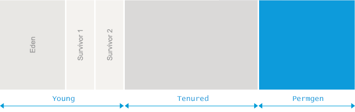

JVM限制了Java程序的最大内存使用量, 可以通过启动参数来配置。而Java的堆内存被划分为多个区域, 如下图所示:

这些区域的最大值, 由JVM启动参数 -Xmx 和 -XX:MaxPermSize 指定. 如果没有明确指定, 则根据操作系统平台和物理内存的大小来确定。
java.lang.OutOfMemoryError: PermGen space 错误信息所表达的意思是: 永久代(Permanent Generation) 内存区域已满
原因分析
我们先看看 PermGen 是用来干什么的。
在JDK1.7及之前的版本, 永久代(permanent generation) 主要用于存储加载/缓存到内存中的 class 定义, 包括 class 的 名称(name), 字段(fields), 方法(methods)和字节码(method bytecode); 以及常量池(constant pool information); 对象数组(object arrays)/类型数组(type arrays)所关联的 class, 还有 JIT 编译器优化后的class信息等。
很容易看出, PermGen 的使用量和JVM加载到内存中的 class 数量/大小有关。可以说 java.lang.OutOfMemoryError: PermGen space 的主要原因, 是加载到内存中的 class 数量太多或体积太大。
示例
最简单的例子
我们知道, PermGen 空间的使用量, 与JVM加载的 class 数量有很大关系。下面的代码演示了这种情况:
1 | import javassist.ClassPool; |
这段代码在 for 循环中, 动态生成了很多class。可以看到, 使用 javassist 工具类生成 class 是非常简单的。
执行这段代码, 会生成很多新的 class 并将其加载到内存中, 随着生成的class越来越多,将会占满Permgen空间, 然后抛出 java.lang.OutOfMemoryError: Permgen space 错误, 当然, 也有可能会抛出其他类型的 OutOfMemoryError。
要快速看到效果, 可以加上适当的JVM启动参数, 如: -Xmx200M -XX:MaxPermSize=16M 等等。
Redeploy 时产生的 OutOfMemoryError
说明： 如果在开发时Tomcat产生警告，可以忽略。 生产环境建议不要 redploy,直接关闭/或Kill相关的JVM，然后从头开始启动即可。
下面的情形更常见,在重新部署web应用时, 很可能会引起 java.lang.OutOfMemoryError: Permgen space 错误. 按道理说, redeploy 时, Tomcat之类的容器会使用新的 classloader 来加载新的 class, 让垃圾收集器 将之前的 classloader (连同加载的class一起)清理掉,。
但实际情况可能并不乐观, 很多第三方库, 以及某些受限的共享资源, 如 thread, JDBC驱动, 以及文件系统句柄(handles), 都会导致不能彻底卸载之前的 classloader. 那么在 redeploy 时, 之前的class仍然驻留在PermGen中, 每次重新部署都会产生几十MB，甚至上百MB的垃圾。
假设某个应用在启动时, 通过初始化代码加载JDBC驱动连接数据库. 根据JDBC规范, 驱动会将自身注册到 java.sql.DriverManager, 也就是将自身的一个实例(instance) 添加到 DriverManager 中的一个 static 域。
那么, 当应用从容器中卸载时, java.sql.DriverManager 依然持有 JDBC实例(Tomcat经常会发出警告), 而JDBC驱动实例又持有 java.lang.Classloader 实例, 那么 垃圾收集器 也就没办法回收对应的内存空间。
而 java.lang.ClassLoader 实例持有着其加载的所有 class, 通常是几十/上百 MB的内存。可以看到, redeploy时会占用另一块差不多大小的 PermGen 空间, 多次 redeploy 之后, 就会造成 java.lang.OutOfMemoryError: PermGen space 错误, 在日志文件中, 你应该会看到相关的错误信息。
解决方案
1. 解决程序启动时产生的 OutOfMemoryError
在程序启动时, 如果 PermGen 耗尽而产生 OutOfMemoryError 错误, 那很容易解决. 增加 PermGen 的大小, 让程序拥有更多的内存来加载 class 即可. 修改 -XX:MaxPermSize 启动参数, 类似下面这样:
1 | java -XX:MaxPermSize=512m com.yourcompany.YourClass |
以上配置允许JVM使用的最大 PermGen 空间为 512MB, 如果还不够, 就会抛出 OutOfMemoryError。
2. 解决 redeploy 时产生的 OutOfMemoryError
我们可以进行堆转储分析(heap dump analysis) —— 在 redeploy 之后, 执行堆转储, 类似下面这样:
1 | jmap -dump:format=b,file=dump.hprof <process-id> |
然后通过堆转储分析器(如强悍的 Eclipse MAT)加载 dump 得到的文件。找出重复的类, 特别是类加载器(classloader)对应的 class. 你可能需要比对所有的 classloader, 来找出当前正在使用的那个。
Eclipse MAT 在各个平台都有独立安装包. 大约50MB左右, 官网下载地址: http://www.eclipse.org/mat/downloads.php
对于不使用的类加载器(inactive classloader), 需要先确定最短路径的 GC root , 看看是哪一个阻止其被 垃圾收集器 所回收. 这样才能找到问题的根源. 如果是第三方库的原因, 那么可以搜索 Google/StackOverflow 来查找解决方案. 如果是自己的代码问题, 则需要在恰当的时机来解除相关引用。
3. 解决运行时产生的 OutOfMemoryError
如果在运行的过程中发生 OutOfMemoryError, 首先需要确认 GC是否能从PermGen中卸载class。 官方的JVM在这方面是相当的保守(在加载class之后,就一直让其驻留在内存中,即使这个类不再被使用). 但是, 现代的应用程序在运行过程中, 会动态创建大量的class, 而这些class的生命周期基本上都很短暂, 旧版本的JVM 不能很好地处理这些问题。那么我们就需要允许JVM卸载class。使用下面的启动参数:
1 | -XX:+CMSClassUnloadingEnabled |
默认情况下 CMSClassUnloadingEnabled 的值为false, 所以需要明确指定。 启用以后, GC 将会清理 PermGen, 卸载无用的 class. 当然, 这个选项只有在设置 UseConcMarkSweepGC 时生效。 如果使用了 ParallelGC, 或者 Serial GC 时, 那么需要切换为CMS:
1 | -XX:+UseConcMarkSweepGC |
如果确定 class 可以被卸载, 假若还存在 OutOfMemoryError, 那就需要进行堆转储分析了, 类似下面这种命令:
1 | jmap -dump:file=dump.hprof,format=b <process-id> |
然后通过堆转储分析器(如 Eclipse MAT) 加载 heap dump。找出最重的 classloader, 也就是加载 class 数量最多的那个. 通过加载的 class 及对应的实例数量, 比对类加载器, 找出最靠前的部分, 挨个进行分析。
对于每个有嫌疑的类, 都需要手动跟踪到生成这些类的代码中, 以定位问题。